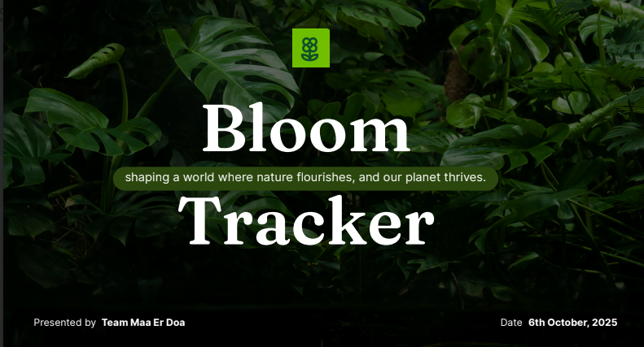

The Bloom Probability Checker App,developed for the NASA Space Apps Challenge, is an interactive plant phenology monitoring system designed to track global vegetation growth and predict future blooming events using satellite remote sensing data, machine learning models, and climate information. By integrating high-resolution Sentinel-2 imagery, NDVI analysis, ground-based phenology datasets, and climate data, the platform provides real-time insights into plant life cycles across different regions of the world. An interactive map allows users to visualize blooming patterns globally, while a species-based search feature delivers detailed information on bloom periods, growth stages, and phenological behavior. Built with a Next.js frontend and a FastAPI backend, and powered by Scikit-learn prediction models, the system supports farmers, researchers, and environmental scientists in improving agricultural planning, monitoring ecosystem health, and understanding the impacts of climate change. By offering accessible, data-driven bloom predictions, the project promotes informed decision-making for sustainable agriculture, biodiversity conservation, and long-term environmental resilience.
My contribution:
Details about this app can be known here: View App details